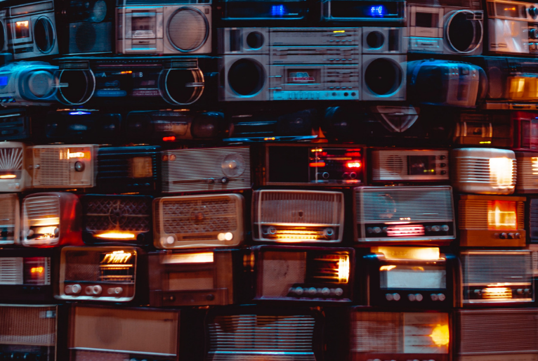

25 de setembro - O rádio é comemorado nesse dia Da Página 3 Pedagogia & Comunicação O dia 25 de setembro é o dia do rádio. O rádio foi patenteado pelo cientista e inventor italiano Guglielmo (Guilherme) Marconi, no início do século 20. A primeira transmissão radiofônica no Brasil aconteceu no dia 7 de setembro de 1922, por ocasião do centenário da independência.
Uma estação de rádio foi instalada no Corcovado e, além de música, emitiu o discurso do presidente da República, Epitácio Pessoa. No ano seguinte foi fundada por Roquete Pinto a primeira emissora de rádio do país: a Rádio Sociedade do Rio de Janeiro.
No entanto, o rádio tem mais razões para ser considerado brasileiro.Roberto Landell de Moura (1861-1928), padre e cientista gaúcho, também havia realizado experiências semelhantes às de Marconi - antes do italiano.
Entre 1901 e 1904, Landell de Moura esteve nos Estados Unidos, onde patenteou inventos, entre os quais um "transmissor de ondas" ou "transmissor fonético a distância" que seria exatamente o rádio. Sua patente, porém, era limitada e perdeu a validade. Marconi ficou com a fama. Trata-se de uma situação semelhante àquela que ocorreu com Santos Dumont e os irmãos Wright.
